Wed, 29 Feb 2012 08:37:32 +0000
Contemporay Muralto Showroom in London
Contemporay Muralto Showroom in London
Rene Haas is one of the most renowned South African furniture designers. Born in Switzerland, Rene has made it her mission to excel in delivering first class interiors — for that she established her company, Muralto, in 1968, which delivers cutting edge furniture to even...
Rene Haas is one of the most renowned South African furniture designers. Born in Switzerland, Rene has made it her mission to excel in delivering first class interiors — for that she established her company, Muralto, in 1968, which delivers cutting edge furniture to even the pickiest of clients.
Last year, Muralto decided to launch in the UK market and they made quite a debut with their showroom in Central London. A great example of contemporary furnishings, the new showroom promises to deliver a fully bespoke design service along with a huge selection of high quality accessories including art, lighting, mirrors and rugs.
The interior is highly appealing and nothing short of bold. It features Muralto’s cutting edge furniture and accessories together with the latest home entertainment systems from RS AV Solutions — who by the way, provided the stunning audio video installation. On the walls we could spot canvases by British Pop Artist Gordon House or South African Pop Artist, Russell Travers, both having great motifs adding to the elegant feel.
Muralto seems to know a few things about functional furniture for dining, living and bedrooms. Definitely a place I’d visit if I were to be in London. You?
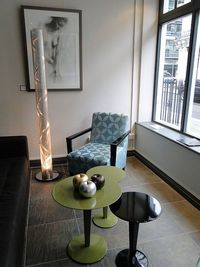
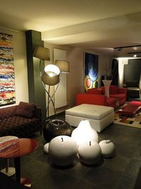
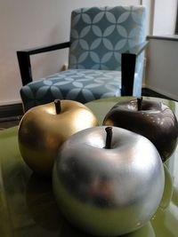
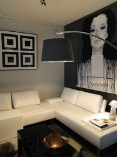
Tue, 28 Feb 2012 19:00:30 +0000
Fenny Ganatra’s Vividly Colored, Contemporary Bounce Chair
Fenny Ganatra’s Vividly Colored, Contemporary Bounce Chair
Elasticity, clean, modern lines and a vivid presentation – these words can all be used to describe Fenny Ganatra’s latest project – the Bounce Chair. The Indian designer exhibited the Bounce chair at the 2012 Maison& Object in Paris and many people got to experience...
Elasticity, clean, modern lines and a vivid presentation – these words can all be used to describe Fenny Ganatra’s latest project – the Bounce Chair. The Indian designer exhibited the Bounce chair at the 2012 Maison& Object in Paris and many people got to experience it’s “bounciness” and vividly colored parts. Its contemporary design is based on ergonomics studies and countless cycles of testing, so that the final product can offer the best features possible.
You can easily stack a few of the Bounce chairs on top of each other and even use them outside, because their weatherproof feature protects them. Three sets of rubbery bands made out of re-engineered silicone support the body’s weight and offer an interesting, but comfortable seating experience. Care to comment on its shape or want to share your experience with this chair? (Found on Contemporist)
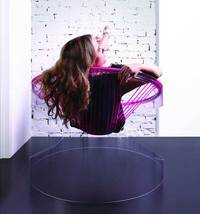
Tue, 28 Feb 2012 16:34:05 +0000
Luxurious Moscow Apartment Strikes With Posh Design
Luxurious Moscow Apartment Strikes With Posh Design
Last week I was writing about this amazing apartment in Moscow with a striking interior that features a modern fireplace. I was amazed. Today, I’m at it again, drooling over the pictures of another flat in the Russian capital city. Located in the famous Triumph...
Last week I was writing about this amazing apartment in Moscow with a striking interior that features a modern fireplace. I was amazed. Today, I’m at it again, drooling over the pictures of another flat in the Russian capital city. Located in the famous Triumph Palace building, the lavish interior is the work of designers Alexei Nikolashina, Alexandra Fedorova and Irina Shumaeva.
The apartment is quite airy, or at least that’s how things feel in the living room. There are white walls and floors everywhere, contrasting with darker wooden accents and the yellow bookcase and the wall unit that stylishly houses the TV. Speaking of the living room, it has a minimalist feel enhanced by the open kitchen (separated only by an eye catching ‘suspended’ wooden bar), the unique glass table and the state of the art appliances that will force you to cook from time to time, no matter how good (or not) you are with your herbs.
Who would’ve thought that Moscow hides such gems? Have you seen the bathroom? Or the serene home office? I guess it’s becoming a habit here on Decoist to cover such fine works of art. We’ll let you discover the rest of the apartment …
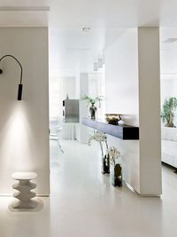
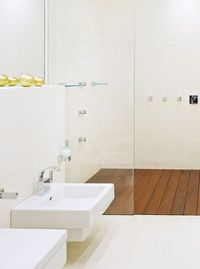
Tue, 28 Feb 2012 14:22:24 +0000
Cleaning and Care Tips for Curtains, Draperies, Lace Curtains and Sheers
Cleaning and Care Tips for Curtains, Draperies, Lace Curtains and Sheers
Treating your window curtains and draperies needs a careful process. As window curtains serve towards protection of your home furnishings, privacy and comfort, it needs very ideal care. In case of cleaning and treating your curtains, you must be well-informed about the material and construction...
Treating your window curtains and draperies needs a careful process. As window curtains serve towards protection of your home furnishings, privacy and comfort, it needs very ideal care.
In case of cleaning and treating your curtains, you must be well-informed about the material and construction of clothing before the cleaning process. Beware of sunlight effecting the color patterns and strength of material.
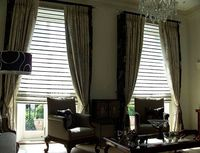
Light colors are more immune to sunlight than the darker ones. Acrylic and polyester stand up to sunlight better than other textile fibers and will maintain color over time. Drapes are more complex structures, made of heavy fabrics, usually extended to the floor, lined, and pleated. Meanwhile, curtains are commonly made up of light weight fabric, are simple structured and easily operable.
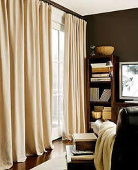Draperies can be cared for daily by giving a gentle shaking, preventing dust and dirt from accumulating in the fibers.
Monthly vacuuming is advisable, preferably with a handheld vacuum set in low mode and soft brush attachment. Trims, buttons and embellishments should be checked before vacuuming.
Washing is another area where you have to be extra careful with draperies. Check whether they are labeled washable, the drapery and lining are made of different fibers (one of them may shrink incongruously), sunlight weakened fabric, fabrics constructed with pleats (which may lose its form on washing), or containing trims and embellishments that are not washable or colorfast. Be sure that you are using cold water and mild detergent for soft washing your draperies. Use tumble drying or line drying as appropriate.
Don’t machine wash or dry clean fiber glass draperies. Hand wash them with care using a rubber glove, in a laundry tub with out any cringing, and dry it without any line-dry folding over the clothesline.
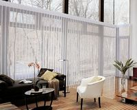
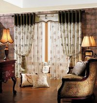
Curtains can also be washed with almost the same caution as draperies, but they tend to be more flexible. If your curtains are marked washable, remove hooks, rings, and hardware. Ensure trims are tightly attached and wash per the instructions. Normally curtains can be machine washed on a gentle cycle and tumble dried easily. You can iron the reverse side if necessary and spray lightly with water if seams are puckered.
While lace curtains are easily machine or dry washable with mild cleaning agents, and dip it in starch solution for an extra body look. Also you can re-hang while it is a little damp without starch for a soft-look. But you must temporarily cover the metal hooks with tissue paper for preventing it from rusting with fabric. Sheer fabric curtains can be cleaned in the same way as lace curtains, but be cautious about organdy sheers which should be dry cleaned.
Mon, 27 Feb 2012 19:19:55 +0000
Fabulous Isolated Family Vacation Home in New Zealand
Fabulous Isolated Family Vacation Home in New Zealand
Designed by Wellington-based studio Parsonson Architects, this fantastic vacation residence rising from a densely forested property captures amazing, soothing views. After enjoying the interiors of another residence built by the same architects who worked on this project – the Salamanca House – we invite you...
Designed by Wellington-based studio Parsonson Architects, this fantastic vacation residence rising from a densely forested property captures amazing, soothing views. After enjoying the interiors of another residence built by the same architects who worked on this project – the Salamanca House – we invite you to enjoy this contemporary home and see if you can find details that will make you daydream about living here.
Located in Apple Bay, Marlborough Sounds, New Zealand, the Apple Bay House is accessible by 4 wheel drive vehicle and boat from the nearest township Picton.
So beautifully isolated, the family vacation house acts as a half indoor, half outdoor platform and features an interesting roof duo, inclined to follow the land and offer protection from weather conditions. Interiors are arranged in such a way that each space gets sunlight and views – the downstairs private spaces benefit from fresh filtered air and treetop views, while the upstairs living spaces end in decks on both side. Don’t you just love it? (Found on HomeDSGN)
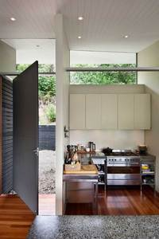
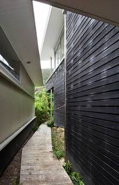
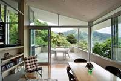
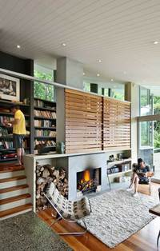
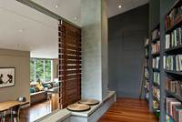
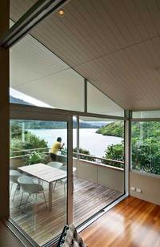
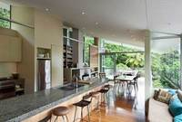
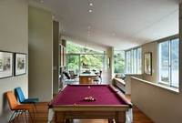
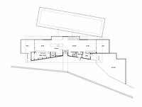
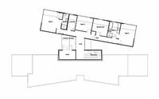
")
")